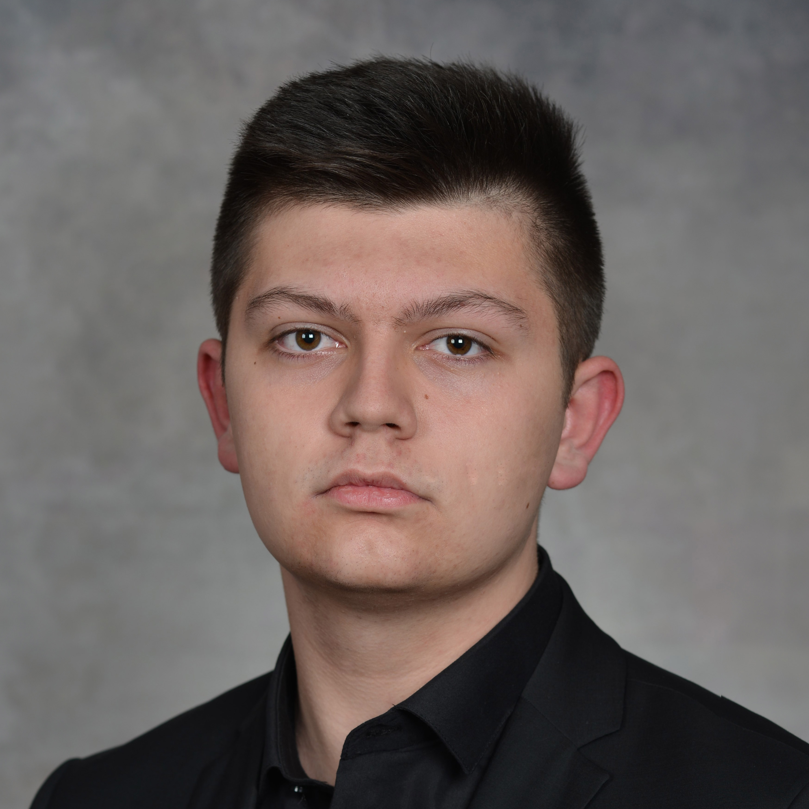

Македонски
Македонски English
English

Здраво, Јас сум Филип
Јас сум студент на Факултетот за Информатички Науки и Компјутерско Инженерство, при УКИМ, Скопје, Република Македонија, на насока Софтверско Инженерство и Информациски Системи. Имам учествувано на повеќе натпревари во областа на информатика, во мојата земја. Ме интересира како работат нештата.
Роден сум на 24 август 2002 во Куманово, каде посетував основно училиште во ОУ "Христијан Карпош", и завршив средно училиште во ОСТУ "Наве Буѓони". Претставувајќи ги и двете мои училишта имам освоено повеќе награди за кои можете да прочитате во моето резиме
Ако сакате да стапите во контакт со мене, направете го тоа од страната за контакт